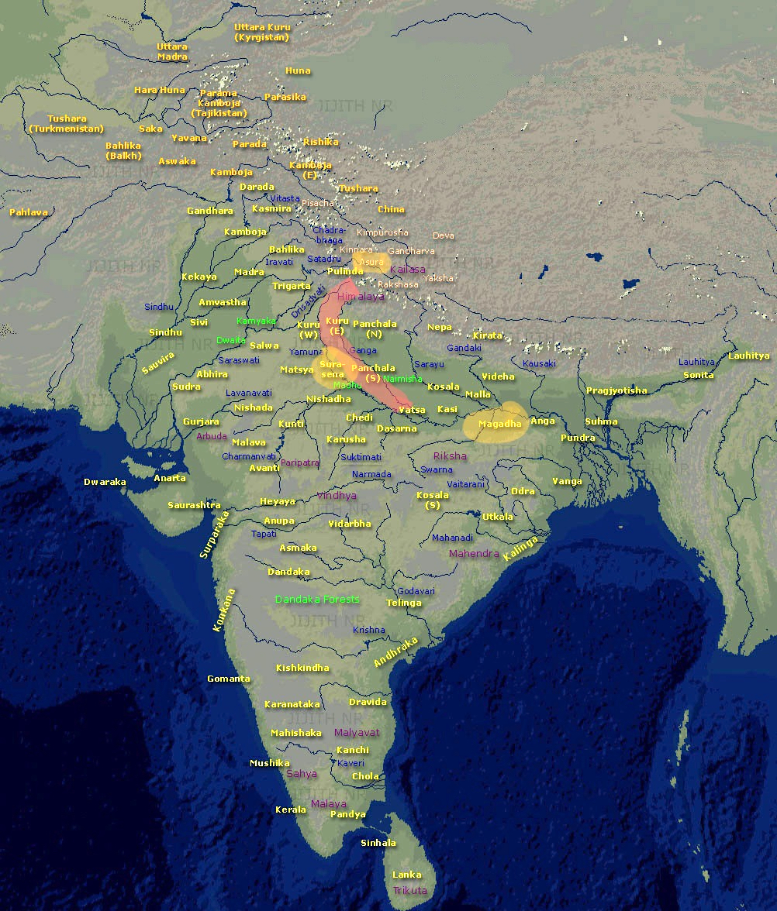

Proposal and the Plan ..
It was as if Matsyagandha found a reason to live. Maharishi Parāśara got off the boat but he left a boatload of hope for Matsya. Every night she waited at the docks. She had gotten a new set of questions. What did Maharishi mean? Why would he even talk to someone like her. At times, she thought she was an insipid laughter for a Yogi — maybe he just wanted to let her feel good, other times she wanted to look beautiful — she must get herself ready for the bigger purpose — but she knew no ways. She wanted to smell good but she couldn't afford the Sandal wood — a wood used in making perfumes. The hope and despair played the cycles of pains and joy. She was caught into duality of the prospects, and unlike the waves in Yamuna, waves of duality were hard to navigate. She must go through this fire to harden herself for a path unknown.
One more subtle change happened. She discovered a new confidence in just being herself. For the first time, she saw her smell as a virtue. She felt she existed despite being all alone in this world. Maharishi's simple anecdote almost changed her self-perception for good. She wondered, why did she not see the simple reality the way he saw it now !
About a year later, on the night of Vijya Dashmi — the tenth night of Hindu month Ashwin,Maharishi returned to the wharf. Entire Mathura was celebrating the auspicious autumn night to commemorate victory of Lord Rama over Ravana. A noble king verses a tyrant — good over evil. The middle of peak festive season in entire India, and more so in this part because of the perfect weather conditions. Wet season ended almost a month ago in mid August (per English Calendar), to let this time of mid September dry with mild temperatures and acceptable humidity. No one was expected working on the docks this night, except that Matsyagandha was there, for 'waiting' was her daily ritual — Karma.
Maharishi smiled at Matsya as if he expected her there waiting for him. He didn't have the courage to ask her why she was here? Why not celebrating the night with the rest, for he knew he was the one who put her to this test. And she sure passed.
Matsya returned the smile as if she simply erased the wait of last four seasons from her memory. He asked her to ferry the boat to the island. She happily toed the boat into waters. As the boat got stable, she looked at Maharishi in anticipation. She could feel her time had come. The moment she was preparing herself for a year was finally here.
Maharishi read her thoughts. She was like an open book to him — uncorrupted and pious. Her big expressive eyes said what her lips would not. Without much ado, he asked her if she could give him a son. No preamble, no sweet romantic submission. All he added — it was for a much bigger cause. A cause, she would appreciate in due course. And of course, she may ask anything in return for the favor of this service!
Service! — Matsya though wildly imaginative, had never thought such a ‘service’ existed. To put it mildly, it was passionless. To say the truth, it was blunt and abrupt! No one asks a woman for a child in their second meeting (spaced an year) without any courtship. She was poor but she wasn't sold out. She worked hard for a living and she bore the wrath of society for no apparent reason. She was a proud woman. A part of her felt as if the man was total noob in worldly things. Even more than her. But other reassured her that he meant what he said — He is not here to steal! He is here to give!
Both of them unaware that what
MaharishiaskedMatsyawas the biggest sacrifice a human could do. Soliciting a new born of a first time mother — be it a human or even an animal, is the most audacious of the 'asks' imaginable. Every cell of a mother's body works nine months, non-stop, to manifest a baby. Not only does she make flesh and blood, she even drafts milk for the new born — to ease the child into inhospitable world. This selfless act is theKarm Yogaof the highest order . Even for a pronouncedKarm Yogi, giving up on such a manifestation - the feat of binding conciousness to a biological form , is too much to ask. But none of them had this physical experience before. Neither comprehended that the price of such a service was more than entire cosmos !
As the moment passed, she staged a quick recovery. Years of training to handle unexpected discomfort, helped her regain her rationale. She was definitely taken aback at the unexpected proposal. It was quite an anticlimax to the high hopes she had whipped up in her mind. She had no clue what to say and what to ask, but she knew Maharishi Parāśara was a Yogi. There was no one in Mathura who didn't know Maharishi, but since last year, her interest in the Yogi had peaked. She had found everything there was to know about him in public domain. He could had any woman if he wanted to, but why then he chose her? He sure was not a womaniser. He wasn't doing it for fun.
More clarity emerged with another passing thought! She knew he could bless her with whatever she wanted — she felt the aura of calm and the strength he exuded, that made her believe the stories of his wizardry she had overheard commuters. Ever since their last meeting, she had wondered what she had in store. Her over sized imagination had led her to many scenarios but none of them was to bear his child. For one, he wasn't attractive, nor did he took care to look one. But more importantly, she knew that Maharishi would never take her (or anyone else) as a wife for his life was dedicated to the celibate work of God. Then why does he need a son, what exactly is the ‘bigger purpose’? She didn't realize, her curiosity had already shifted to the ‘purpose’ rather than her prospect of being a single mother in this transaction.
She thought for a while. She wasn't even sure if he really wanted a baby or this was a way to ask for sex? Or he might be asking me as a wife. Why am I not sure? How do I seek clarity. Her mind chose to play a question for a question — the best strategy to seek more when uncertainty strikes. She whispered — what would people say? As if there were people staring at her in the middle of the river.
Looking at Yogi she asked — how could I possibly hide such a thing from the village? She meant she wanted to be in, but how?
Boat was leaving the banks of Yamuna- heading mid stream. The rise and fall of waters simulated in the rise and fall of her breath. She could hear herself breathing and it wasn't because she was rowing the boat alone. She could boat off this bank like a child would step into walk of her mother. The anxiety stemmed from that no one had ever asked her a sexual favor and here she had a Yogi asking for a child! Does he like me or is he playing with me? Or is it something else? And the fear of unknown! She had never imagined herself pregnant!
Rishi Parāśara had a sigh of relief. First he didn't get a plain ‘no’, or was asked to leave the boat. After all, his reputation was at stake. And second, he too wanted it a furtive union. Not only was he not ready for a wife, he knew Matsyagandha must go on, for she had a larger role to play in her later life.
And he had a plan — I know a nice cavern hidden in the island. We may stay there. I will be around you entire pregnancy and will have no dearth of food or shelter. After couple days, I will have a pigeon sent to the village head that you took on a journey downstream with me, as a sailor. And that we were gone to get lifesaving herbs from the East where Yamuna meets the most pious river Ganga.
Let me add a bit on the geography of the place before we move forward :-
Rivers Ganga and Yamuna run parallel through the fertile plains of North India. They formed the boundaries of the powerful kingdom established (long back) by King Kuru . Shown as Kuru (West) and Kuru (East) in the map below. He built a grand capital in Hastinapuron the banks of Yamuna — nowadays known as Delhi, the capital of India. Hastinapur was around hundred miles upstream from the abode of Maharishi.

Kuru's grandson King Shantanu currently ruled the place. Maharishi could have approached the king for help with herbs but they grew beyond his borders deep into kingdom of Magadha with capital in Patliputra.
Hastinapur and Patliputra had ups and downs in the political relations. Thus, the (imaginary) trip had to be clandestine. Technically, Rishies were free to travel across state boundaries and Maharishi was not even a native of Kuru-kingdom because his Ashrama was on the western bank of Yamuna — a vast land infested with many Asura lords. After his early days of warring with Asuras in this area, Maharishi Parāśara helped Ugrasen take the reins of a new small kingdom named Sur Sena (Good people's army). Thanks to the "fire-traps" of Maharishi, most of the rebellions either left the place or were living a subdued life under cover.
Maharishi decided to continue stay in his grand father's (Maharishi Vasishta's) Ashrama, on the bank of Yamuna in the capital of Sur Sena — a city (now) known as Mathura — a mile upstream from (now) famous Vishram Ghat of Mathura. The village where Matsya stayed, was run by an erstwhile Asura lord — Dashraaj. He was defeated by Maharishi but got his life back after he promised to live a conformal lifestyle. That he did, but inside, he wanted to be important. His ambitions, still played young even though old age caught up on him. On the surface, he served the Ashram and stayed in close with the ideology of Maharishi.
The map above (published under creative commons license at wikimedia), shows the locations of Kingdoms mentioned in the Indian epics. Focus is on
Mahabharata. Due credits to the publisher as per license.Names in Yellow were the main kingdoms. The river names are shown in blue, the mountains in purple and forests in green. You may need to enlarge the map to appreciate the extensive spread of populations, and complexity of the political landscape.
Asurashad their own kingdom run byVrishaparvan— anAsuraroyal sage, thoughAsuraswere spread beyond their indicated location. It is important to understand the difference betweenAsurasandRakshasas.Raskshsaswere the tribal population of "bigger built" who obviously wanted to continue with status quo because of advantage of their muscle power over animals and civilized humans. On the other handAsuraswere the educated humans who just didn't subscribe toVaidikway of life. ManyAsuralords naturally developed close ties withRakshasas they had a common enemy in civilized world but this is not to say that allAsurasorRakshsaswere inherently against scriptures and the ones who believed in scriptures. In fact the palace ofPandavas- grand sons ofDwaipayanawas built by aRakshsaarchitect.Asuraswere neither against scientific discovery. They had their own weapon systems and they too worked hard to invoke celestial powers.I have highlighted the
Kuruterritory and the location ofMaharishi Parāśaraabode (inSur-Sena). The western boundary ofKurukingdom was riverYamunaand eastern side was bound by riverGanga. Both major water ways for transport and source of irrigation in prosperousKuruempire.
{kind=link}
An advantage of staying in Sur-Sena was no Kuru kingdom laws applied to the Ashrama. Maharishi was free to run his experiments and live the way he wanted. Prime among them was to optimize tools for writing such that common sages could easily scribe their work. When it came to writing, fear of retribution wasn't as big as as fear of becoming a laughing stock. Writing thus far was done on cotton clothes. Cotton was too expensive because the writing was more like big posters — a page, standing six feet tall. It was more like replicating the carvings in old caves. It usually cost one Gold coin to create hundred human size posters. Only possible for ultra rich or for the kings. He wanted to see if he could grow some new plant that served as the main material for a paper like experience. His goal was an order of magnitude reduction in size as well as the cost. If he could bring down the cost to a silver coin, many more books would enter publishing domain and many new players. These experiments led him into agriculture and hence his book Krishi Parāśara exploring new crops. Finally, he figured cotton could be mixed with wood to create a new medium that would be known as paper in due course but we are getting ahead of ourselves. Between the cotton posters and real paper, one more step was destined - the palm leaves, that Maharishi saw on the island after his Samadhi. All this was to fulfill his grand father's vision to scribe the scriptures. He knew he had covered much ground but there were many more miles to go.
Staying off the main-land (Kuru Kingdom) also ensured only real seekers had the courage to reach him. Thus, less time spent on social and political disputations. And most probably, he had a fascination for the virgin island and the deep cave system that led to this cavern he was talking about. He believed that the path forward must emanate from the middle of two opposites of good and evil, and one need to dive deeper into the caves of soul to seek the ever illusive peace.
Back to our story !
Matsyagandha thought for a while and finally nodded her consent. Her eyes hollow. She was still not sure it was happening to her but the plan seemed workable. Maharishi looked at her and he figured she wanted something else. He stood up and asked — Do you want something else Matsya? — His voice full of gratitude.
What will happen to me after ? I will need to feed the new born at least for a year! But what after that? — asked Matsyagandha.
Maharishi Parāśara thought for a while. He wanted to make sure he found the right words as much as he wanted to say the truth. He said — after two years, once child is ready to go with me, you may, if you wish to, return to the village.
Matsya's face turned red. Her body shaking and her words broken — this village hates me. If older women figured out I lost my virginity, they would despise me even more!
As it is, Matsya was living a hell. This would only add more to the antipathy she already received. They would most likely name her a whore and burn her alive as a culprit of prostitution — a recognized sin in Kuru-land. Stories of such incidents were rampant though no such incident had yet happened in her village. If they were kind, they would most likely hand her over to some Asura lord where she had be enslaved for life, and possibly gang raped daily. That was considered a fair punishment for the sinful hookers!
No one would recognize you Matsya! — Maharishi said with conviction that was hard to ignore — I would bless you into the most beautiful woman ever lived. You will smell of Sandal all day and all night. People will call you Yojangandha for your musky fragrance shall surround a distance. (The literal meaning of Yojan being a mile and Gandha means fragrance.) Fares would line up to take your boat. And one among them might take you as a wife, having fallen madly in love with you. And thereafter, you would rule the world!
Matsya couldn't believe her ears. The prospect of smelling good and the idea that the village that hated her bowed to her beauty, set butterflies in her. She was not sure if it was the prospect of revenge, or expectation of success, but the proposal now seemed like a true blessing. She folded both her hands and kneeled. And then she looked up straight into deep eyes of Maharishi. Her eyes said Yes. Maharishi met her gaze. He wanted to be sure — you need to say a 'Yes' Matsya.
As he reconfirmed the acceptance, he touched the thumb of his right hand between her eyes and with left hand he pulled out his wand, lowered it into the waters of holy Yamuna and threw few droplets on her face. She felt her head spinning and she lost her consciousness.
The place between the eyes, right above the nose is called Aajna Chakra. This is where a Yogi Guru may touch with his thumb to associate you with his "knowledge". Once the pathway is opened, there is no going back. You are now one with your Guru. In Hindu tradition, this is why a tilak is placed here, particularly if you participate in a ritual. Matsya was now part of a Maha Yazna. She would take Maharishi's vision for grounding in reality!